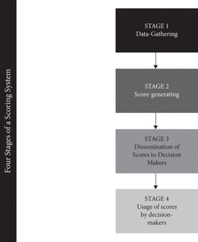
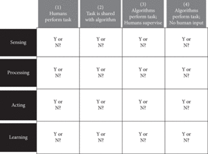

John Danaher
The Oxford Handbook of Philosophy of Technology
Edited by Shannon Vallor
Subject: Philosophy, Philosophy of Science Online Publication Date: Nov 2020
DOI: 10.1093/oxfordhb/9780190851187.013.16
Abstract and Keywords
There is a growing sense of unease around algorithmic modes of governance (“algocracies”) and their impact on freedom. Contrary to the emancipatory utopianism of digital enthusiasts, many now fear that the rise of algocracies will undermine our freedom. Nevertheless, there has been some struggle to explain exactly how this will happen. This chapter tries to address the shortcomings in the existing discussion by arguing for a broader conception of freedom as well as a broader conception of algocracy. Broadening the focus in this way enables one to see how algorithmic governance can be both emancipatory and enslaving, and provides a framework for future development and activism around the creation of this technology.
Keywords: freedom, autonomy, algocracy, algorithmic governance, non-interference, non-domination, manipula, tion, coercion
We live in an age of algorithmic governance. Advances in computing technology have created a technological infrastructure that permeates, shapes, and mediates our everyday lives. From personal computers to smartphones, from high street banks to high school playgrounds, from dawn to dusk, we are continually monitored, nudged, and reminded by a growing network of “smart” devices. The native language of these devices is that of the algorithm. We are nestled inside a web of them: algorithms that collect, parse, and sort our data; algorithms that spot patterns and learn from their mistakes; algorithms that issue instructions to the world.
Scholars in many social science disciplines are now trying to map, analyze, and evaluate the consequences of this rise in algorithmic governance. They give it different names, depending on their disciplinary backgrounds and scholarly interests. Some favor terms such as “algorithmic regulation” (Yeung 2017; 2018) or “algorithmic governmentality” (Rouvroy 2013x; 2015). I favor using the neologism “algocracy,” first coined by the sociologist A. Aneesh (2006; 2009), to describe the phenomenon (Danaher 2016a; 2016b). The label itself is not as important as the phenomenon it is used to describe: the unavoidable and seemingly ubiquitous use of computer-coded algorithms to understand and control the world in which we live.
Within the growing scholarly literature on algocracy, three major debates have emerged.
The first is the debate about privacy and surveillance (Polonetsky and Tene 2013). Contemporary algorithmic governance is made possible through the use of Big Data systems.
These systems are what drive machine learning algorithms to develop impressive abilities to sort and mine data. These systems would not be possible without mass surveillance, which always poses a threat to privacy. The second is the debate about bias and inequality (Zarsky 2012; Crawford 2013; O’Neil 2016; Binns 2018; Eubanks 2018; Noble 2018). The machine learning algorithms that are used to develop (among other things) credit scores for bank customers, or to predict likely rates of recidivism among prisoners, are created through the use of “training” data. That is, they learn how to predict future behaviors by spotting patterns in large databanks of past behaviors. There is considerable concern that these databanks, and the patterns that are extrapolated from them, can be biased. Studies have been done trying to highlight the biases that arise in different domains, such as the apparent racial bias of the predictive policing and predictive sentencing algorithms that are widely used in the United States (Ferguson 2017; Binns 2018). The third is the debate about transparency and procedure. A major concern about machine learning algorithms is that they are relatively opaque in how they operate (Pasquale 2015; Danaher 2016b). These algorithms can produce impressive results, but their precise workings are often hidden from view, for both legal and technical reasons (Pasquale 2015; Burrell 2016). They are “black boxes”: changing the world around them without being readily comprehensible to the human beings affected. This threatens many of the procedural values that we hold dear in democratic societies (Citron and Pasquale 2014; Danaher 2016b).
Slightly less widely discussed, though every bit as important (Yeung 2017; Frischmann and Selinger 2018), is the impact that algocratic systems have on our freedom. With all these systems monitoring, nudging, and prompting, obvious questions arise about the effects this has on individual choice and behavior. Do algocratic systems promote or undermine our freedom? How should we respond to this? Some people have started to address these questions, but those that do tend to fixate on the threats that algocratic systems pose to our freedom (Yeung 2017; Frischmann and Selinger 2018). This can seem understandable: Anything that monitors, nudges, and suggests must, surely, be corroding our freedom? But in this chapter I argue that this is not necessarily the case. To be more precise, I argue that we should resist any seemingly simple answer to the question of whether algocracy negatively or positively impacts our freedom. Freedom is a complex and multidimensional value, and algocracy is a complex and multidimensional phenomenon. It follows, reasonably enough, that the impact of this technological phenomenon on freedom is multifaceted. It can promote and undermine our freedom at one and the same time. We need to be sensitive to this complexity. Only then will we know what it means to be free in an age of algocracy.
To make this case, the chapter proceeds in three main steps. First, it discusses the nature of freedom, illustrating how it is complex in two distinct, but equally significant ways. Second, it discusses the nature of algocracy, explaining the different forms it can take, and suggesting that there is a large “logical space” of different possible algocratic systems in any given domain. Third, taking this complexity onboard, it presents five mechanisms through which algocratic systems can promote and undermine freedom. In each section, the intention is not so much to reach definitive normative conclusions about the desirability/undesirability of algocratic systems; rather, the intention is to present a series of frameworks for thinking about this issue. Consequently, the chapter is programmatic in nature, favoring breadth of analysis over depth of argumentation.
Think About It
To assess the impact of algocracy on freedom we must have some sense of what freedom consists in. There is a long-standing philosophical debate about what we might call
“metaphysical freedom.” This debate focuses on the question of whether humans have free will, and the related question of whether human behavior is causally determined and if that prevents us from having free will. This can be contrasted with the debate about “political” or “social” freedom, which focuses less on the deep metaphysical questions, and more on what it takes to live freely within a particular political arrangement, society or culture. Can you be free if the government imposes sanctions on you for following your conscience on religious matters? Can you be free if your workplace, college or school has a speech code that prevents you from saying and doing certain things? These kinds of questions are central to the political tradition of liberalism (broadly conceived).
Although both debates are important, I focus on the political and social form of freedom in what follows. The primary reason for this is that I think the positions staked out in the metaphysical debate are largely unaffected by technological and social change. Whether we have free will or not depends on deep (possibly unknowable) structural features of our reality. It is not something that is going to be changed or affected by the development of a new technology like an algocratic system. Furthermore, the metaphysical and political debates already work largely independently of one another in the philosophical literature.
That said, it would be foolish to deny the fact that there is some overlap between the debates. In particular, it is important to realize that those who espouse a compatibilist view of free will — that is, a view which holds that metaphysical freedom is compatible with causal determinism — often develop accounts of what it means to be free that focus on conditions similar to the political ones discussed later in the chapter (e.g., Frischmann and Selinger 2018). Nevertheless, I will not be directly engaging with what compatibilists have to say in the remainder of this chapter.
Even if we limit the focus to the political form of freedom, there is still much that needs to be clarified if we are going to assess the impact of algocracy on it. This is because political freedom is complex in two distinct ways: (1) it is complex with respect to the conditions that need to be satisfied in order to protect it; and (2) it is complex with respect to the way in which it is valued. Let’s consider both forms of complexity in more detail. 1
With respect to the first form of complexity, it is obvious that there are many conceptions of freedom out there and that within these conceptions different conditions are identified as being freedom-promoting or freedom-undermining. It is not hard to find examples of this. The intellectual historian, Quentin Skinner, for instance, has mapped out a genealogy of all the different conceptions of freedom that have been defended since the birth of modern “liberal” political philosophy in the seventeenth century (Skinner 2008a, 2008b, and 2012). He argues that this genealogy has three main branches to it. First, there are those who insist that to be free means that you are free of interference, where interference can consist of the use of physical force or coercive threats to direct behavior. Second, there are those who insist that to be free means that you act in a way that is consistent with your authentic self, where this involves some consistency between action and your personal values or intrinsic nature. And third, there are those that insist that to be free means to be free from domination (Pettit 2001, 2011 & 2014), where domination arises whenever one person’s actions are subject to the arbitrary will of another (e.g., they require tacit or explicit approval from that person in order to live an unencumbered life).
The first and third branches correspond to the idea of “negative” liberty; the second corresponds to the idea of “positive” liberty.
The philosophers Christian List and Laura Vallentini (2016) take a more abstract approach. They argue that if you survey the literature on political freedom, it is possible to discern from this a “logical space” in which the various conceptions of freedom arise. This might sound like a daunting idea, but it is quite straightforward. You can construct a logical space by identifying the different dimensions along which theories vary. List and Vallentini argue that there are two such dimensions in the case of freedom. They argue that most theorists agree that interference by other agents is something that undermines freedom, but they then disagree on two things: (1) whether that interference is freedom-undermining only if it exists in the actual world or if it can be freedom-undermining if it exists in other possible worlds that are similar to our own (this defines the “modal dimension” of the logical space); and (2) whether some forms of interference should not be taken to undermine freedom because they are morally justified or whether moral and immoral forms of interference should both be taken to undermine freedom (the “moral dimension” of the logical space). Using these two dimensions, List and Vallentini construct a two-by-two matrix that defines four logically possible concepts of freedom. Two of them (those that focus on interferences in the actual world only) correspond to classical liberal theories of freedom as non-interference, similar to those discussed by Skinner. One of them (the one that focuses on the absence of immoral interference across several possible worlds) corresponds to the theory of freedom as non-domination, which is favored by Skinner and Philip Pettit. Finally, there is something that List and Vallentini call the theory of freedom as independence (which involves the absence of moral and immoral interference across several possible worlds), which they argue has been neglected in the debate thus far.
One more example of the complexity of freedom can be found in discussions of autonomous decision making. The relationship between freedom and autonomy is, itself, somewhat complex, with one popular account holding that the former is a “local” property that applies to specific choices (was this choice free?) whereas the latter is a “global” property that applies across someone’s lifetime (is this person living an autonomous life?) (Dworkin 1988). For present purposes I will treat them as equivalent concepts. The important point for now is that within the debate about autonomy there are several conditions that need to be satisfied in order for a choice (or a life) to count as autonomous.
Everyone agrees on the basic idea — to be autonomous means that you are, in some sense, the “author” of your own life/choices — but there are differences when it comes to the critical sub-conditions of autonomy (Killmister 2017). To give but one example of this, consider the theory of autonomy that was first proposed by Joseph Raz back in the 1980s. This theory focuses on three conditions that need to be satisfied if a particular choice is to count as autonomous:
If a person is to be maker or author of his own life then he must have the mental abilities to form intentions of a sufficiently complex kind, and plan their execution.
These include minimum rationality, the ability to comprehend the means required to realize his goals, the mental faculties necessary to plan actions, etc. For a person to enjoy an autonomous life he must actually use these faculties to choose what life to have. There must in other words be adequate options available for him to choose from. Finally, his choice must be free from coercion and manipulation by others, he must be independent. (Raz 1986, 373)
The three conditions of autonomy embedded in this quoted passage are (1) the person must have the minimum rationality to plan actions that will allow them to achieve their goals; (2) they must have adequate options available to choose from; and (3) they must be independent, which Raz takes to mean free from coercion and manipulation when making and implementing their choices.
I could go on, but I think the point is made. Theories of freedom are complex. There are different accounts of what it means to be free and within those different accounts many distinct freedom-undermining and promoting conditions have been identified. It is tempting at this point to deal with this complexity by throwing your hands up in despair and simply picking and defending one preferred theory. That is what many people do. But I believe that this is mistaken. There is much less tension and disagreement between the different accounts than first appears to be the case. Indeed, any apparent tension can be largely dissolved by acknowledging that all the different accounts identify some conditions that are relevant to freedom, but that the accounts vary in the breadth of the conditions they deem to be important or in how much weight they place on them. It is possible to accommodate this variety by viewing freedom as a scalar property and not a binary one. In other words, by accepting that people can be more or less free, and not simply free or un-free. Assessing the scale of freedom that any one individual has will then depend on the various conditions considered above (rationality, adequate options, absence of interference and/or domination).
This doesn’t mean, however, that we should view freedom as something that varies along a single dimension and that degrees of freedom can be easily determined by one’s location along that single dimension. As should be clear from the preceding discussion, the different conditions of freedom identified by the different theories of freedom suggest that the reality is far more complex. It is more likely that the conditions define a multi-dimensional space and that one’s degree of freedom depends on where one fits within that multi-dimensional space. Models of this multi-dimensional space could be quite conceptually unwieldy, depending on whether you are a “lumper” or “splitter” when it comes to defining the different dimensions. For ease of understanding, and for illustrative purposes, I will adopt a three-dimensional model of freedom over the remainder of this chapter.
This model focuses on the following three dimensions of freedom: 1. The Intelligibility/Rationality Dimension: which measures the extent to which one can make decisions that are based on identifying, weighing, and assessing options for their fit with one’s preferences and plans. This does not focus on some narrow form of “economic” rationality; it focuses on the ability to make decisions in an intelligible fashion.
2. The Manipulation Dimension: which measures the extent to which one’s decisions are free from manipulation, where manipulation can come in the form of physical force, mental coercion, brainwashing, cultural indoctrination and so on. Some of these are classed as highly manipulative, and some less so.
3. The Domination Dimension: which measures the extent to which one’s decisions are free from domination, where domination involves the presence of some authorizing agent from whom one must tacitly or explicitly get approval in order to act.
You could probably parse the dimensional space in different ways, but I think each of these is a defensible inclusion within a complex account of freedom. I also think that if we understand them to define distinct dimensions of freedom, we can appreciate something important: the possible need for tradeoffs across the different dimensions. It may turn out, for example, that completely avoiding all forms of manipulation will require that we sacrifice some degree of intelligibility, or that removing some forms of manipulation requires accepting some forms of domination. In other words, it may be impossible to maximize along all dimensions simultaneously. We may find out that we have to prioritize or compromise when it comes to protecting our freedom.
This is still only the first form of complexity we must confront when thinking about freedom — the complexity of the conditions/dimensions of freedom. We still have to confront the complexity with respect to how freedom is valued. It is all well and good to have a clear sense of what freedom requires, but this is useless if we don’t know why we are so obsessed with it in the first place. Fortunately, there is less complexity to contend with here. There are essentially three different approaches we can take to the value of freedom. We can view freedom as an intrinsic value; that is, something worth protecting and promoting in and of itself. We can view it as an instrumental value; that is, something worth protecting because it helps us to achieve other valuable ends like well-being or flourishing. Or we can view it as a bit of both; that is, as something that is both intrinsically valuable and instrumentally valuable.
There are some approaches to the value of freedom that sit outside this simple tripartite scheme. For instance, Ian Carter (1995 and 1999) has defended the view that freedom is an “independent” value, which he defines as being slightly distinct from an intrinsic value. Likewise, I have argued that freedom should be viewed as an axiological catalyst; that is. as something that makes good things better and bad things worse (Danaher 2018). In saying this, I was motivated by the fact that a good deed freely done is usually judged more favorably than a good deed performed under coercion; and someone who killed a bunch of people freely is usually judged less favorably than someone who did so unfreely.
It is also possible to think that freedom is completely devoid of value and shouldn’t be protected at all.
The subtleties of these other positions lie beyond the scope of this paper, but even if we stick with the tripartite view there is still plenty of complexity that needs to be worked out. If we value freedom intrinsically, then we will need to decide where freedom fits within the pantheon of other values like friendship, knowledge, pleasure, flourishing and so on. Is freedom the single most important value? Does it rank equally among these other values? Or is it less important? Similarly, if we value freedom instrumentally, then we need to determine how important a means to other valuable ends it is. Could it be that there are other, more efficient, ways to achieve these ends? Or is freedom the single most reliable means to these ends? How we answer these questions will determine, in large part, our attitude toward a phenomenon like algocracy. If we think freedom is the single most important value, then we might view any threat to it as a major social problem that needs to be addressed with utmost speed. If we think it is just one value among many, and possibly not that important, we might be willing to sacrifice some degree of freedom to protect these other ends.
I won’t say much about how we should or might value freedom in what follows. I will focus, instead, on the question of how algocracy might affect the various dimensions of freedom. But, clearly, the weight of the arguments I make, and the attitude you should take toward them, will depend significantly on how value freedom.
3. The Logical Space of Algocracy
The complexity of freedom is just one side of the coin. We also have to consider the complexity of algocracy. To do this, we first need to have a clear sense of what algocracy is. I said at the start that “algocracy” is my preferred term for an increasingly familiar phenomenon: the use of big data, predictive analytics, machine learning, AI, robotics (etc.) in any system that governs human behavior. The term was originally coined by the sociologist A. Aneesh (2006; 2008). Aneesh’s main interest was in delineating between the different forms that human governance systems can take. A governance system can be defined, roughly, like this:
Governance system: Any system that structures, constrains, incentivizes, nudges, manipulates or encourages different types of human behavior.
This is a very broad definition, but this is deliberate since “governance” is taken to be a broad concept. It’s natural to speak of governance as something that arises at an institutional or governmental level, and that is certainly an obvious home for the concept, but it is also something that arises outside of a formal institutional context (e.g., governance by tacit social norms) and at an individual level (what tools do I use to govern my own behavior). Aneesh drew a contrast between three main types of governance system in his research: markets, bureaucracies and algocracies. A market is a governance system in which prices structure, constrain, incentivize, nudge (etc.) human behavior; a bureaucracy is a governance system in which rules and regulations structure, constrain, incentivize, nudge (etc.) human behavior; and an algocracy is: Algocracy: A governance system in which computer coded algorithms structure, constrain, incentivize, nudge, manipulate or encourage different types of human behavior.3
Aneesh used the concept to understand how workers participated in a globalized economy. Aneesh thought it was interesting how more workers in the developing world were working for companies and organizations that were legally situated in other jurisdictions.
He argued that this was due to new technologies (computers + internet) that facilitated remote work. This gave rise to new algocratic governance systems within corporations, which sidestepped or complemented the traditional market or bureaucratic governance systems within such organizations.
That’s the origin of the term. I tend to use the term in a related but slightly different sense. I certainly look on algocracies as kinds of governance system — ones in which behavior is shaped by algorithmically programmed architectures. But I also use the term by analogy with “democracy,” “aristocracy,” and “technocracy.” In each of those cases, the suffix “cracy” is used to mean “rule by” and the prefix identifies whoever does the ruling.
So “democracy” is “rule by the people” (the demos), aristocracy is “rule by aristocrats”
and so on. Algocracy then can also be taken to mean “rule by algorithm,” with the emphasis being on rule. In other words, for me “algocracy” captures the authority that is given to algorithmically coded architectures in contemporary life. Whenever you are denied a loan by a credit-scoring algorithm; whenever you are told which way to drive by a GPS routing-algorithm; whenever you are prompted to exercise a certain way or eat a certain food by a health and fitness app you are living within an algocratic system.
With this understanding in place, we can already begin to see that algocracy is a complex phenomenon. Algocratic systems arise in different domains (financial, legal, bureaucratic, personal) and take different forms. There have been several attempts to bring order to this complexity. One method of doing so is to focus on the various stages involved in the construction and implementation of an algocratic system. Algocratic systems do things: they make recommendations; they set incentives; they structure possible forms of behavior; and so on. How do they manage this? Much of the answer lies how they use data.
Zarsky (2013) suggests that there are three main stages in this: (1) a data collection stage (where information about the world and relevant human beings is collected and fed into the system); (2) a data analysis stage (where algorithms structure, process and organize that data into useful or salient chunks of information); and (3) a data usage stage (where the algorithms make recommendations or decisions based on the information they have processed). Citron and Pasquale (2014) develop a similar framework, using slightly different terminology, that focuses on four main stages. This is illustrated in Figure 1.
Figure 1 Four stages of a scoring system.
Effectively, what they do is break Zarsky’s “usage” stage into two separate stages: a dissemination stage (where the information processed and analyzed by the algorithms gets communicated to a decision maker) and a decision-making stage (where the decision maker uses the information to do something concrete to an affected party, e.g., deny them a loan because of a bad credit score).
In doing this Citron and Pasquale make an interesting assumption about how the algocratic system relates to the human beings who are affected by it. They assume that the primary function of an algocratic system is to generate recommendations to humans, who still retain ultimate decision-making authority. But this may not be the case. Indeed, as they themselves note, there are different ways in which an algocratic system could connect with (or avoid connecting with) the humans whose behavior is being governed.
Adopting a simple tripartite framework originally developed in the military context, they distinguish between human-in-the-loop systems (where humans retain ultimate decision-making authority), human-on-the-loop systems (where humans retain veto power over the algocratic system) and human-off-the-loop systems (where the system functions without human input or oversight).
Other theorists have offered similar classificatory breakdowns which focus more specifically on the question that interests me in this chapter, that is, the way in which these systems might undermine/promote individual freedom. Gal (2018) argues that there are at least four different kinds of algocratic system, each of which has a distinctive effect on individual choice. The four kinds are (1) “stated preference” systems, in which the human users specify exactly what they want the system to do and the system assists in achieving this outcome; (2) “menu of preferences” systems, in which the human user doesn’t specify their preferred outcome but chooses from a menu of options provided to them by the algorithm; (3) “predicted preference” systems, in which the system, based on data-mining (from a large sample population), tries to predict what an individual user will want and target options at them accordingly; and (4) “self-restraint preference” systems, in which the algorithm functions as a pre-commitment device, favoring the user’s long-term interests (perhaps stated; perhaps predicted) over their immediate interests. As you might imagine, these different kinds of algocratic system have different consequences for individual autonomy. A stated preference algorithm, for example, might seem to be obviously freedom-promoting; a predicted preference algorithm much less so.
In a similar, but more complex, vein, Yeung (2018) tries to develop a taxonomy of algocratic systems. This taxonomy focuses on three main variables that determine the form that an algocratic system can take. Each of these three variables has two “settings”, making for eight possible forms of algocracy. The first dimension concerns the nature of the algorithm itself. Is it fixed or adaptive? The second dimension concerns the way in which the algorithmic system monitors individual behavior. Does it “react” to the user’s violation of its behavioral standards or does it try to predict and pre-empt the user? The third dimension concerns the role that human regulators play in the system. Does the system automatically enforce its standards (perhaps giving humans a veto power) or does it simply recommend (perhaps strongly) enforcement options to them? Again, the different settings on each of these dimensions would appear to be relevant when it comes to assessing the impact of these systems on individual choice and autonomy. Intuitively, it seems like a system that anticipates and pre-empts violations of prescribed standards, and that automatically enforces sanctions on those violations, poses more of a threat to freedom than a system that simply reacts and recommends. But, again, being sensitive to this complexity is key in any analysis of the freedom-promoting or freedom-undermining effect of algocracy.
Each of these attempts to bring order to complexity has some value to it. Nevertheless, I think there is another way of doing this that is both more illuminating and more revelatory when it comes to evaluating the impact of algocracy on freedom. This method of bringing order to complexity is inspired by the “logical space” method of List and Vallentini (discussed in the previous section) and builds upon the insights provided by all the thinkers mentioned in the previous paragraphs of this section. It starts by identifying three major variables that determine the form that algocratic systems take.
The first is the particular domain or type of decision making that is affected by the system. As already mentioned, algocracies arise in different contexts, including financial, governmental, legal, personal, medical and so on. Within each of these contexts many different decisions have to be made, for example, decisions about granting loans, investing in shares, allocating welfare benefits, identifying tax cheats, picking which movie to watch next, deciding when to exercise and how, and so on. The possible variation in affected choices is vast. Indeed, it is so vast that it cannot be easily captured in a formal model or conceptual framework. This is why I essentially ignore it for now. This is not because it is unimportant: when figuring out the freedom-promoting or undermining effects of any particular algocratic decision-making procedure, the domain of decision making should always be specified in advance and the relative importance of that domain should be remembered. This is something I emphasize again later in this chapter. For the time being, however, I set it to one side.
The second variable concerns the main components of the decision-making “loop” that is utilized by these agencies. I mentioned Zarsky, Citron, and Pasquale’s attempts to identify the different “stages” in algocratic decision procedures. One thing that strikes me about the stages identified by these authors is how closely they correspond to the stages identified by authors looking at automation and artificial intelligence. For instance, the collection, processing and usage stages identified by Zarsky feel very similar to the sensing, processing and actuating stages identified by AI theorists and information systems engineers. This makes sense. Humans use their intelligence to make decisions and algocratic systems are largely intended to replace or complement human decision makers. It would, consequently, make sense for these systems to break down into those distinct task stages as well. Using the direct analogy with intelligence, I think we can identify four distinct processes undertaken by any algocratic system:
1. Sensing: the system collects data from the external world.
2. Processing: the system organizes that data into useful chunks or patterns and combines it with action plans or goals.
3. Acting: the system implements its action plans.
4. Learning: the system uses some mechanism that allows it to learn from what it has done and adjust its earlier stages.
These four processes provide a more precise characterization of the decision-making “loop” that humans can be in, on, or off. The important point in terms of mapping out the logical space of algocracy is that algorithmically coded architectures could be introduced to perform one or all of these four tasks. Thus, there are subtle and important qualitative differences between the different types of algocratic system, depending on how much of the decision-making process is taken over by the computer-coded architecture.
In fact, it is more complicated than that and this is what brings us to the third variable.
This one concerns the precise relationship between humans and algorithms for each task in the decision-making loop. As I see it, there are four general relationship-types that could arise: (1) humans could perform the task entirely by themselves; (2) humans could share the task with an algorithm; (3) humans could supervise an algorithmic system; and (4) the task could be fully automated, that is, completely under the control of the algorithm.
Using these second and third variables, we can construct a grid which we can use to classify algocratic systems. The grid looks something like Figure 2.
Figure 2 Sample grid used to classify algocratic systems.
This grid tells us that when constructing or thinking about an algocratic system we should focus on the four different tasks in the typical intelligent decision-making loop and ask of each task: how is this task being distributed between the humans and algorithms?
When we do this, we see the “logical space” of possible algocratic systems opening up before us.
Understanding algocracy in this way has a number of virtues. First, it captures some of the true complexity of algocracy in a way that existing conceptual frameworks do not. It not only tells us that there is a large logical space of possible algocratic systems; it allows us to put some numbers on it. Since there are four stages and four possible relationship-types between humans and computers at those four stages, it follows that there are 44 possible systems (i.e., 256) within any given decision-making domain. That’s a minimum level of complexity. You could also make the logical space more complex by adding further dimensions of variance, depending on how fine-grained you want your analysis of algocracy to be. For instance, computer scientists sometimes distinguish between algorithmic processes that are (1) interpretable and (2) non-interpretable (i.e., capable of being deconstructed and understood by humans or not). That could be an additional dimension of variance since at each stage in the decision-making process humans could be sharing a task with an interpretable or non-interpretable system. This would mean that for each stage in the decision-making process there are eight possible configurations, not just four.
That would give us a logical space consisting of 84 possibilities.
Another virtue of the logical space model is that it gives us an easy tool for coding the different possible types of algocratic system. For the initial two-dimensional model, I suggest that this be done using square brackets and numbers. Within the square brackets there would be four separate number locations. Each location would represent one of the four decision-making tasks. From left-to-right this would read: [sensing; processing; acting; learning]. You then replace the names of those tasks with numbers ranging from 1 to 4 and these numbers could then represent the way in which the task is distributed between the humans and algorithms. A value of “1” would be used when the relevant task is performed entirely by humans, and so on. As follows:
[1, 1, 1, 1] = Would represent a non-algocratic decision procedure, that is, one in which all the decision-making tasks are performed by humans.
[2, 2, 2, 2] = Would represent an algocratic decision procedure in which each task is shared between humans and algorithms.
[3, 3, 3, 3] = Would represent an algocratic decision procedure in which each task is performed entirely by algorithms, but these algorithms are supervised by humans with some possibility of intervention/veto.
[4, 4, 4, 4] = Would represent an pure algocratic decision procedure in which each task is performed by an algorithm, with no human oversight or intervention.
If we wanted to use a more complicated three-dimensional logical space, we could simply modify the coding system by adding a letter after each number to indicate the additional variance. For example, if we adopted the interpretability/non-interpretability dimension, we could add “i” or “ni” after each number to indicate whether the step in the process was interpretable (i) or not (ni). As follows:
[4i, 4i, 4i, 4i] = Would represent a pure algocratic procedure that is completely interpretable
[4i, 4ni, 4i, 4ni] = Would represent a pure algocratic procedure that is interpretable at the sensing and acting stages, but not at the processing and learning stages.
This coding mechanism has some practical advantages. Three are worth mentioning.
First, it gives designers and creators of algocratic systems a quick tool for figuring out what kind of system they are creating and the potential challenges that might be raised by the construction of that system. Second, it gives researchers something to use when investigating real-world algocratic systems and seeing whether they share further properties (such as their freedom-undermining or promoting potential). For instance, you could start investigating all the [3, 3, 3, 3] systems across various domains of decision making and see whether the human supervision is active or passive across those domains and then trace out the implications of this for individual freedom. Third, it could give us a simple tool for measuring how algocratic a system is or how algocratic it becomes over time.
So we might be able to say that a [4ni, 4ni, 4ni, 4ni] is more algocratic than a [4i, 4i, 4i, 4i] and we might be able to spot the drift towards more algocracy within a decision-making domain by recording the changes in the values. This could also be useful when thinking about the freedom-promoting or undermining potential of an algocratic system. As a rough rule of thumb, the more algocratic a system is, the more it is likely to undermine freedom, at least within a given decision-making domain.
This is not to say that there are no problems with the logical space model. The most obvious is that the four stages and four relationships are not discrete in the way that the model presumes. To say that a task is “shared” between a human and an algorithm is to say something imprecise and vague. There may be many different possible ways in which to share a task. Not all of them will be the same. This also is true for the description of the tasks. “Processing,” “collecting,” and “learning” are all complicated real-world tasks.
There are many different ways to process, collect, and learn. That additional complexity is missed by the logical space model. But all conceptual models involve some abstraction and simplification of reality, and all conceptual models miss some element of variation.
List and Vallentini’s logical space of freedom, for instance, involves a large amount of abstraction and simplification. To say that theories of freedom vary along modal and moral dimensions is to say something vague and imprecise. Specific theories of freedom will vary in how modal they are (i.e., how many possible worlds they demand the absence of interference in) and in their understanding of what counts as a morally legitimate interference. As a result of this, List and Vallentini argue that the logical space of freedom should be viewed as a “definitional schema” — something that is fleshed out in more detail with specific conceptualizations of the four main categories of freedom. The logical space of algocracy can be viewed in a similar light.
Another obvious problem with the logical space model is that it is constructed with an eye to a particular set of normative challenges posed by algocracy. By placing the emphasis on the different ways in which tasks are shared between humans and algorithms, we are naturally drawn to considering the impacts on human agency and autonomy. This means that the model is relatively silent about some of the other normative concerns one could have about algocratic systems (e.g., bad data, biased data, negative consequences). It’s not that these concerns are completely shut out or ignored; it’s just that they aren’t going to be highlighted simply by identifying the location with the logical space that is occupied by any particular algocratic system. What could happen, however, is that empirical investigation of algocratic systems with similar codes could reveal additional shared normative advantages/disadvantages, so that the code becomes shorthand for those other concerns.
That said, this limitation of the logical space model is more of a feature than a bug in the present context. This chapter is explicitly focused on the impact of this technology on freedom, and this conceptual framework allows us to do this by giving us a more realistic appreciation of the complexity of algocracy.
So freedom is complex and algocracy is complex. It follows that the impact of algocracy on freedom is likely to be complex. When we consider the different dimensions of freedom, and how they might line up with the different possible forms of algocracy, we intuit that there is unlikely to be a simple universal assessment of the impact of the latter on the former. This means we should be suspicious of any arguments that attempt to provide such a general assessment. It also means, unfortunately, that I am not going to be able to provide any definitive analysis of the freedom-undermining or freedom-promoting effects of algocracy in the space of this chapter. Indeed, one of the main conclusions to be reached here is that a definitive analysis is impossible. We need to take each form of algocracy as it comes, looking at how it impacts upon the different dimensions of freedom, and then determining whether this is a good or bad thing, contingent on how we understand the value of freedom. As we do this, we will also need to bear in mind the relative value of freedom across different domains of decision making. It’s not necessarily a good thing to have total autonomous control over every decision you make. It may be exhausting or stultifying if you do. So even if we find that some algocratic systems are freedom-undermining in a particular domain, it does not necessarily follow that algocracy is freedom-undermining in general, or that its freedom-undermining effects in that domain are unwelcome.
Despite the difficulties involved, I am going to make some tentative, general, arguments about the possible impact of algocracy on freedom. The intention here is not to offer an unjustified global assessment, but rather to highlight some distinctive challenges, and opportunities, that algocracy might pose for freedom.
Let’s consider the challenges first. It should be obvious from the description of how algocratic systems work that they can undermine freedom. If we share or bequeath one or more of the decision-making tasks to an algocratic system, then we open ourselves up to forms of interference and domination that could negatively affect our freedom. We can see this if we take each of the three dimensions of freedom outlined earlier in this chapter (rationality/intelligibility, manipulation and domination) and consider how they may be negatively affected by algocracy.
Recall that the rationality dimension focuses on the extent to which our decision making is the product of conscious and intelligible reflection on our goals and the best way of realizing them through our actions. Algocratic systems obviously threaten the rationality of decision making if they involve complete automation or outsourcing of all decision-making tasks. They also threaten it in more subtle ways, with less pervasive forms of automation, or even when tasks are shared between humans and computers. The non-interpretability (or “epistemic opacity”) of algorithmic systems that organize data and make recommendations to humans would undermine rationality to at least some degree. It would mean that we are less certain of the reasons for our actions. A recommendation is made, but we are not sure why we should follow it. In an extreme form, this can result in humans being “programmed” to act like “simple machines.” This is one of the major arguments of Brett Frischmann and Evan Selinger in their book Re-engineering Humanity (2018). They give the example of the online contracting environment, as well as the use of app-based services like Google Maps, each of which, they claim, encourages humans to act like simple stimulus-response machines. The algocratic system presents the human user with a stimulus (a box to tick or recommendation to follow) and we give a rote, automatized response. If they are right about this, then even algocratic systems that seem to preserve a degree of human authority may be significantly undermining the rational intelligibility of our decision making. There is no rational reflection on the reasons for our actions; we just blindly follow the instructions.
Closely related to this is the negative impact that algocratic systems can have on the manipulation dimension of freedom. There are many obvious ways in which algocratic systems can manipulate our choices. A system could be designed to coerce you into acting in a certain way. For example, a credit-scoring algocratic system might threaten you with the loss of creditworthiness if you don’t act in a prescribed way. There is also the possibility of physical coercion, if the system is joined up with some robotic technology that can physically interfere with the human user. This is not completely far-fetched. The Pavlok behavior change bracelet, for example, is an algocratic system that shocks its user if they don’t follow through on certain commitments. 4 For the time being, this system is something that an individual chooses to impose on themselves, not something that is imposed on them by some outside force. Consequently it may not undermine freedom (I return to this in a moment). Nevertheless, it is easy to imagine similar systems being used to physically coerce behavior in a freedom-undermining fashion.
More significant than explicit coercion, however, are the subtle forms of manipulation that are possible through the use of algocratic systems. Yeung (2017) argues that algocratic systems enable “hypernudging,” which is a kind of behavior change technique that operates beneath the radar of conscious awareness and happens in a dynamic and highly personalized fashion. Nudging is a concept that was made popular by Cass Sunstein and Richard Thaler (2009). It involves using insights from behavioral science to construct choice architectures that “nudge” people towards actions that are welfare-maximizing or for the common good. For example, setting the default on retirement savings to “opt-out” rather than “opt-in,” or placing healthy foods at eye level and unhealthy ones below or above, makes it more likely that people will choose options that are in their long-term interests. Nudges usually operate on subconscious biases in human reasoning. Sunstein and Thaler maintain that nudging is not freedom-undermining because it is still possible for people to identify and reject the “nudges.” Others are more doubtful and argue that nudges are highly manipulative (Sunstein 2016). Whatever the merits of nudging, Yeung’s point is that algocratic technologies bring nudging to an extreme. Instead of creating a one-size-fits-all choice architecture that is updated slowly, if ever, you can create a highly personalized choice architecture that learns and adapts to an individual user. This can make it much more difficult to identify and reject the nudges.
Finally, there is the potential impact on the domination dimension. Recall that domination arises whenever decision making is subject to the arbitrary will of another. This “other”
may not directly manipulate or interfere with your behavior, but the mere fact that they could (in some possible world), and that you have to keep on their good side to avoid any
such interference, is enough to compromise your freedom. Hoye and Monaghan (2018) and Graf (2017) both argue that the mass surveillance on which algocratic systems are built enables domination on a mass scale. If your behavior is being monitored and mined for patterns and predictions, then it is possible that some of that behavior might trigger interference from the system itself (thanks to automation) or from some human controller of the system, particularly if it falls outside the normal or permissible range of the system’s expectations. This means that you have to live within the constraints established by the system if you want to avoid interference. If we are constantly flitting from the grasp of one algocratic system to the next — across the different domains of life — the extent of freedom-undermining domination could be quite dramatic. It might give rise to what I call “algocratic micro-domination.”
“Micro-domination” is a concept that I take from the work of Tom O’Shea (2018), who uses it to understand the forms of domination experienced by people with disabilities. He argues that people with disabilities often suffer from many small-scale instances of domination. If they live in an institutional setting, or are heavily reliant on care and assistance from others, then large swathes of their daily lives may be dependent on the good will of others. They may need these others to help them when they wake up, when they go to the bathroom, when they eat, when they go outside, and so on. Taken individually, these cases may not seem all that serious, but aggregated together they take on a different guise: The result is often a phenomenon I shall call ‘micro-domination’: the capacity for decisions to be arbitrarily imposed on someone, which, individually, are too minor to be contested in a court or a tribunal, but which cumulatively have a major impact on their life. (O’Shea 2018, 136) The pervasiveness of algocracy in modern society can give rise to a similar phenomenon.
Many small-scale, arguably trivial, choices in our everyday lives take place within algocratic systems: what route to drive, what news stories to read, who to talk to on social media, what film to watch next and so on. A network of devices monitors and tracks our behavior and sends us prompts and reminders. This means that we are now the “subjects” of many algorithmic masters. They surveil our lives and create a space of permissible/acceptable behavior. Everything is fine if we stay within this space. We can live happy and productive lives (perhaps happier and more productive than our predecessors), and to all intents and purposes, these lives may appear to be free. But if we step out of line we may be quick to realize the presence of the algocratic masters. Consider, Janet Vertesi’s experiences in trying to “hide” her pregnancy from the algocratic systems that monitor consumer behavior online (Vertesi 2014). Vertesi, an expert in Big Data, knew that online marketers and advertisers like to know if women are pregnant. Writing in 2014, she noted that an average person’s marketing data is worth about 10 cents whereas a pregnant person’s data is worth about $1.50. She decided to conduct an experiment in which she would hide her own pregnancy from the online data miners. This turned out to be exceptionally difficult. She had to avoid all credit card transactions for pregnancy-related shopping. She had to implore her family and friends to avoid mentioning or announcing her pregnancy on social media. When her uncle breached this request by sending her a private message on Facebook, she deleted his messages and unfriended him (she spoke to him in private to explain that even these private messages are mined for data). In the end, her attempt to avoid algocratic domination led to her behavior being flagged as potentially criminal: For months I had joked to my family that I was probably on a watch list for my excessive use of Tor and cash withdrawals. But then my husband headed to our local corner store to buy enough gift cards to afford a stroller listed on Amazon. There, a warning sign behind the cashier informed him that the store “reserves the right to limit the daily amount of prepaid card purchases and has an obligation to report excessive transactions to the authorities.”
It was no joke that taken together, the things I had to do to evade marketing detection looked suspiciously like illicit activities. All I was trying to do was to fight for the right for a transaction to be just a transaction, not an excuse for a thousand little trackers to follow me around. But avoiding the big-data dragnet meant that I not only looked like a rude family member or an inconsiderate friend, but I also looked like a bad citizen. (Vertesi 2014) Vertesi wouldn’t have had any problems if she had lived her life within the space of permissible activity created by the system of algorithmically controlled commerce. She wouldn’t have been interfered with or overtly sanctioned. By stepping outside that space, she opened herself up to interference. She was no longer tolerated by the system. This is a good illustration of how algocratic micro-domination might arise.
But it is not all doom and gloom. If designed and implemented in the right way, algocratic systems can promote, rather than undermine freedom. We see this most clearly if we remember that (1) sometimes you may have to tradeoff one dimension of freedom against another and (2) sacrificing freedom in one choice domain may benefit freedom in another.
There are consequently two mechanisms, in particular, that algocratic systems could use to promote freedom.
The first is choice filtration. In order to make a rationally intelligible decision, you must be able to identify and select among options that might (or might not) be conducive to your goals. It’s often assumed in mainstream economic theory that the more options the better (the more likely it is that someone can find an option that satisfies their preferences). But there are some experimental studies in psychology that cast this into doubt.
Barry Schwartz, and his colleagues, famously identified the “paradox of choice,” which states that if people are confronted with too many options they can become overwhelmed and unable to decide what to do (Schwartz 2004). At a certain extreme, too many options actually undermines freedom. Like many findings in experimental psychology (Open Science Collaboration 2015), this one is under attack for failing to replicate, but the most comprehensive meta-analysis of the phenomenon (Scheibehenne et al 2010) suggests that although it may not exist in every choice context, it does exist in some and often with quite a large effect size. One of the advantages of algocratic systems is that they can help to filter choices and reduce the feeling of being overwhelmed. Certainly, I feel grateful when Netflix recommends viewing options to me. It makes it much easier to use my rationality to select something that is conducive to my goals. More generally, algocratic systems can make decision making more rationally intelligible by bringing order to the chaos of data. By identifying salient patterns and bringing them to our attention, they can give us access to decision-relevant information that we might otherwise lack. This is not true for every algocratic system. Some can result in more opacity, but we must remember that the world is always somewhat opaque to human reason. We don’t yet have a theory of everything. Until we do, we must compromise and accept some element of decisional opacity. By illuminating and helping us to make sense of some data, algocratic systems might represent a good compromise when it comes to a minimum level of opacity. This may mean, however, that we have to accept some domination or potential manipulation into our lives — because we have to let the systems monitor us to do their work — but this might be a worthwhile tradeoff.
The second way that algocratic systems can help is by creating cognitive slack. This is similar to the first mechanism but it has more to do with increasing overall freedom by offloading some decision-making domains to algocratic systems. The work of Sendhil Mullainathan and Eldar Shafir argues that people who suffer from various kinds of scarcity (e.g., scarcities of time or income) often suffer from impaired cognitive control over their behavior (Mullainathan and Shaffir 2012 and 2014; Shah, Mullainathan and Shaffir 2012).
To be more precise, it argues that scarcity places a tax on cognitive bandwidth. “Bandwidth” is general term they use to describe the ability to focus on tasks, solve problems, exercise control, pay attention, remember, plan, and so on. All of these things are, of course, crucial to freedom. Mullainathan and Shafir’s main contention, backed up by a series of experimental and field studies, is that scarcity narrows cognitive bandwidth. For example, if you have less money, you tend to be uniquely sensitive to stimuli relating to price. This leads to a cognitive tunneling effect: you become very good at paying attention to anything relating to money in your environment, but have reduced sensitivity to everything else. This results in less fluid intelligence and less executive control, which means you are less able to make rationally intelligible autonomous decisions across the full range of life’s activities. Miles Brundage and I (Brundage and Danaher 2017) have argued that algocratic systems could address this problem, at least in part. By offloading decision-making authority to an algocratic system you can free up some “cognitive slack,” which means you can escape from your cognitive tunnel, and promote freedom in other aspects of your life. This is, admittedly, just a hypothesis, but it is one worth exploring in more detail.
So we have then five general mechanisms through which algocracy might affect freedom, three of them negative and two positive. There are probably many more mechanisms that have yet to be created, identified, and debated. Let me just close by injecting one further note of caution into the discussion. In addition to remembering the complex relationship between freedom and algocracy, it is also worth remembering, and avoiding, the “status quo” bias in how we think about that relationship (Bostrom and Ord 2006). There is always a danger in thinking about novel technologies that we fixate on their “newness.” We look at the “new” threats or opportunities they pose for cherished values and assume that they must be either terrible or wonderful. We ignore the fact that new technologies do not arise in a vacuum. They emerge into a world that already has its own baseline mix of threats and opportunities. The impact of the new technology must always be evaluated relative to that pre-existing baseline. So when it comes to freedom and algocracy, we need to remember that things like manipulation and domination are nothing new. The world is already replete with them. We need to figure out whether algocratic technologies make things better or worse.
To sum up, in this chapter I’ve presented three frameworks for thinking about freedom in an age of algocracy. First, I’ve outlined a framework for thinking about the value of freedom. I’ve argued that freedom is a complex value. Indeed, it is so complex that it is best to think of it as a scalar and multi-dimensional value, something that you can have more or less of, rather than something you either have or you don’t. It is something about which you may need to compromise, by trading the different dimensions of freedom off against one another, and not trying to maximize across all dimensions at once. I’ve also argued that there are several ways in which to value freedom (intrinsically, instrumentally etc.) and that these always need to be factored in when thinking about the impact of algocratic systems on our freedom.
Second, I’ve outlined a framework for thinking about the nature of algocracy. Again, I’ve argued that algocracy is a complex phenomenon. Algocratic systems arises in many different domains and within any given domain there is a large, logical space of possible forms that the system could take. These forms vary depending on how they share and distribute decision-making tasks between humans and machines. It is important to remember these different possible forms of algocracy, both from a design perspective and from a critical perspective, because some pose a greater threat to freedom than others.
Finally, I’ve outlined a framework for thinking about the likely impact of algocracy on freedom. Given the complexity of freedom and the complexity of algocracy, I’ve argued that there is unlikely to be a simple global assessment of the freedom-promoting or undermining power of algocracy. This is something that has to be assessed and determined on a case-by-case basis. Nevertheless, there are at least five interesting and relatively novel mechanisms through which algocratic systems can both promote and undermine freedom. We should pay attention to these different mechanisms, but do so in a properly contextualized manner, and not by ignoring the pre-existing mechanisms through which freedom is undermined and promoted.
References
Aneesh, A. 2006. Virtual Migration. Durham, NC: Duke University Press.
Aneesh, A. 2009. “Global Labor: Algocratic Modes of Organization.” Sociological Theory, 27, no. 4: 347–370.
Binns, Reuben. 2018. “Fairness in Machine Learning: Lessons from Political Philosophy.”
Journal of Machine Learning Research 81: 1–11.
Bostrom, Nick, and Ord, Toby. 2006. “The Reversal Test: Eliminating Status Quo Bias in Applied Ethics.” Ethics 116, no. 4: 656–679.
Brundage, Miles, and Danaher, John. 2017. “Cognitive Scarcity and Artificial Intelligence: How Intelligent Assistants Could Alleviate Inequality.” Philosophical Disquisitions, May 15. http://philosophicaldisquisitions.blogspot.com/2017/05/cognitive-scarcity-
Burrell, Jenna. 2016. “How the Machine Thinks: Understanding Opacity in Machine Learning Systems.” Big Data and Society (January–June): 1–12. doi: 10.1177/2053951715622512
Carter, Ian. 1995. “The Independent Value of Freedom.” Ethics 105, no. 4: 819–845.
Carter, Ian. 1999. A Measure of Freedom. Oxford: OUP.
Citron, Danielle & Pasquale, Frank. 2014. “The Scored Society: Due Process for Automated Predictions.” Washington Law Review, 89, no. 1: 1–34.
Crawford, Kate. 2013. “The Hidden Biases of Big Data.” Harvard Business Review, April 1. https://hbr.org/2013/04/the-hidden-biases-in-big-data.
Danaher, John. 2015. “How Might Algorithms Rule Our Lives? Mapping the Logical Space of Algocracy.” Philosophical Disquisitions June 15. https://
philosophicaldisquisitions.blogspot.com/2015/06/how-might-algorithms-rule-our-
Danaher, John. 2016a. “The Logical Space of Algocracy: A Guide to the Territory.” Talk to the IP/IT/Media Law Discussion Group, Edinburgh University School of Law, November 25.
Danaher, John. 2016b. “The Threat of Algocracy: Reality, Resistance and Accommodation.” Philosophy and Technology, 29, no. 3: 245–268.
Danaher, John. 2018. “Moral Freedom and Moral Enhancement: A Critique of the ‘Little Alex’ Problem.” Moral Enhancement: Critical Perspectives, edited by Michael Hauskeller and Lewis Coyne. Cambridge: Cambridge University Press.
Page 21 of 24
PRINTED FROM OXFORD HANDBOOKS ONLINE (www.oxfordhandbooks.com). © Oxford University Press, 2018. All Rights Reserved. Under the terms of the licence agreement, an individual user may print out a PDF of a single chapter of a title in Oxford Handbooks Online for personal use (for details see Privacy Policy and Legal Notice).
Subscriber: New York University Libraries; date: 14 February 2021
Freedom in an Age of Algocracy
Dworkin, Gerald. 1988. The Theory and Practice of Autonomy. Cambridge: Cambridge University Press.
Eubanks, Virginia. 2018. Automating Inequality. New York: St Martin’s Publishing.
Ferguson, Andrew. 2017. The Rise of Big Data Policing: Surveillance, Race, and the Future of Law. New York: New York University Press.
Frischmann, Brett, and Selinger, Evan. 2018. Re-Engineering Humanity. Cambridge: Cambridge University Press.
Gal, Michal. 2018. “Algorithmic Challenges to Autonomous Choice.” Michigan Journal of Law and Technology 25 (Fall): 59–104.
Gräf, Eike. 2017. When Automated Profiling Threatens Freedom: a Neo-Republican Account. European Data Protection Law Journal 4: 1–11.
Hoye, J. Matthew, and Monaghan, Jeffrey. 2018. “Surveillance, Freedom and the Republic.” European Journal of Political Theory 17, no. 3: 343–363.
Killmister, Jennifer. 2017. Taking the Measure of Autonomy: A Four-Dimensional Theory of Self-Governance. London: Routledge.
Lessig, Lawrence. 1999. Code and Other Laws of Cyberspace. New York: Basic Books.
Lessig, Lawrence. 2006. Code 2.0. New York: Basic Books.
List, Christian. and Vallentini, Laura. 2016. “Freedom as Independence.” Ethics 126, no.
4: 1043–1074.
Mullainathan, Sendhil, and Shafir, Eldar. 2012. Scarcity: The True Cost of Not Having Enough. London: Penguin.
Mullainathan, Sendhil, and Shafir, Eldar. 2014. “Freeing Up Intelligence.” Scientific American Mind 25, no. 1 (Jan/Feb): 58–63.
Noble, Safiya. 2018. Algorithms of Oppression. New York: New York University Press.
Open Science Collaboration. 2015. “Estimating the Reproducibility in Psychological Science.” Science 349, no. 6251: aac4716.
O’Neil, Cathy. 2016. Weapons of Math Destruction. London: Penguin.
O’Shea, Tom, 2018. “Disability and Domination.” Journal of Applied Philosophy 35, no. 1: 133–148.
Pasquale, Frank. 2015. The Black Box Society. Cambridge, MA: Harvard University Press.
Pettit, Philip. 2001. Republicanism: A Theory of Freedom and Government. Oxford: Oxford University Press.
Page 22 of 24
PRINTED FROM OXFORD HANDBOOKS ONLINE (www.oxfordhandbooks.com). © Oxford University Press, 2018. All Rights Reserved. Under the terms of the licence agreement, an individual user may print out a PDF of a single chapter of a title in Oxford Handbooks Online for personal use (for details see Privacy Policy and Legal Notice).
Subscriber: New York University Libraries; date: 14 February 2021
Freedom in an Age of Algocracy
Pettit, Philip. 2011. “The Instability of Freedom as Non-Interference: The Case of Isaiah Berlin.” Ethics 121, no. 4: 693–716.
Pettit, Philip. 2014. Just Freedom: A Moral Compass for a Complex World. New York: W.W.
Norton and Co.
Polonetsky, Jules, and Tene, Omar. 2013. “Privacy and Big Data: Making Ends Meet.”
Stanford Law Review 66: 25–33.
Raz, Joseph. 1986. The Morality of Freedom. Oxford: Oxford University Press.
Rouvroy, Antoinette. 2013. “Algorithmic Governmentality and the End (s) of Critique.” Society of the Query, 2. https://networkcultures.org/query/2013/11/13/algorithmic-
governmentality-and-the-ends-of-critique-antoinette-rouvroy/
Rouvroy, Antoinette. 2015. “Algorithmic Governmentality: a Passion for the Real and the Exhaustion of the Virtual.” All Watched over by Algorithms. Berlin. Conference Presentation, 29th January. https://www.academia.edu/10481275/
Algorithmic_governmentality_a_passion_for_the_real_and_the_exhaustion_of_the_virtual
Scheibehenne, B., Greifeneder, R., & Todd, P. M. 2010. “Can There Ever Be Too Many Options? A Meta-analytic Review of Choice Overload .” Journal of Consumer Research, 37: 409–425.
Schwartz, Barry. 2004. The Paradox of Choice: Why Less Is More. New York, NY: Harper Collins.
Shah, Anuj. K., Mullainathan, Sendhil, & Shafir, Eldar. 2012. “Some Consequences of Having Too Little.” Science, 338, no. 6107: 682–685.
Skinner, Quentin. 2008a. Hobbes and Republican Liberty. Cambridge: Cambridge University Press.
Skinner, Quentin. 2008b.“The Genealogy of Liberty.” Public Lecture, UC Berkley, 15
September.
Skinner, Quentin. 2012. Liberty before Liberalism. Cambridge: Cambridge University Press.
Sunstein, Cass. 2016. The Ethics of Influence. Cambridge, UK: Cambridge University Press.
Thaler, Richard, & Sunstein, Cass. 2009. Nudge: Improving Decisions about Health, Wealth and Happiness. London: Penguin.
Vertesi, Janet. 2014. “Internet Privacy and What Happens When You Try to Opt Out.”
Time, May 1.
Page 23 of 24
PRINTED FROM OXFORD HANDBOOKS ONLINE (www.oxfordhandbooks.com). © Oxford University Press, 2018. All Rights Reserved. Under the terms of the licence agreement, an individual user may print out a PDF of a single chapter of a title in Oxford Handbooks Online for personal use (for details see Privacy Policy and Legal Notice).
Subscriber: New York University Libraries; date: 14 February 2021
Freedom in an Age of Algocracy
Yeung, Karen. 2017. “‘Hypernudge’: Big Data as a Mode of Regulation by Design.” Information, Communication and Society, 20, no. 1: 118–136.
Yeung, Karen. 2018. “Algorithmic Regulation: A Critical Interrogation.” Regulation and Governance 12, no. 3: 505–523.
Zarsky, Tal. 2012. “Automated Predictions: Perception, Law and Policy.” Communications of the ACM 15, no. 9: 33–35.
Zarsky, Tal. 2013. “Transparent prediction.” University of Illinois Law Review 4: 1504.
Notes:
(1. ) Brief aside: one could argue that I should use the term “complicated” as opposed to
“complex.” The latter has a particular meaning in the field of complexity science. It is used to describe the fundamental unpredictability of certain systems containing many distinct interacting parts. The former describes a system that consists of many parts but is relatively easy to predict and manage. Although I am not concerned here with the predictability or explainability of a phenomenon, it could be argued that when I say that freedom is “complex” what I really mean is that it is “complicated,” i.e., consists of many parts.
(2. ) Pettit would probably dispute the way in which List and Vallentini characterize his theory. His theory holds that only arbitrary forms of domination are freedom undermining, but he tries to define arbitrariness in non-moral terms. List and Vallentini argue that it is very difficult for him to do this and discuss this issue at length in their paper.
(3. ) There are some similarities here with Lawrence Lessig’s idea, drawn from legal theory, that “code is law,” but there are differences too. Lessig’s “code is law” idea has a narrow application (Lessig 1999; 2006).
(4. ) See https://pavlok.com
John Danaher
John Danaher, Senior Lecturer, School of Law, National University of Ireland, Galway Page 24 of 24
PRINTED FROM OXFORD HANDBOOKS ONLINE (www.oxfordhandbooks.com). © Oxford University Press, 2018. All Rights Reserved. Under the terms of the licence agreement, an individual user may print out a PDF of a single chapter of a title in Oxford Handbooks Online for personal use (for details see Privacy Policy and Legal Notice).
Subscriber: New York University Libraries; date: 14 February 2021